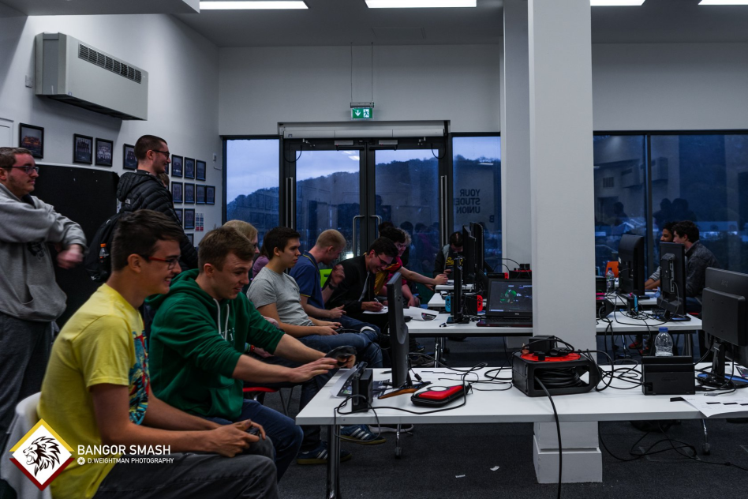
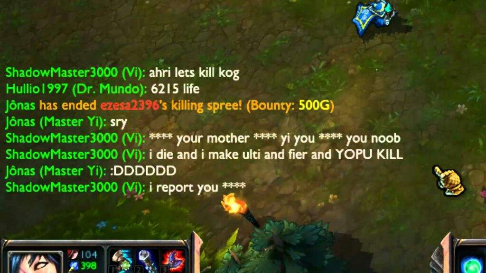

My first tournament
Attending my first tournament was a big step to becoming a semi-professional gamer. I was super nervous but since then have come a long way.

Toxicity in online vs offline communities
Playing both League of Legends and Super Smash Bros Ultimate for semi-professional teams has been an eye-opening experience when it comes to the differences within their communities.
 Gaming and mental health
Whilst gaming has created lots of opportunities for me in terms of travelling places and meeting people, on the other hand it can be quite isolating being hidden away in your room for hours on end only speaking to your online friends. I want to share some tips on how to avoid this isolation and enjoy gaming whilst keeping as mentally healthy as possible!